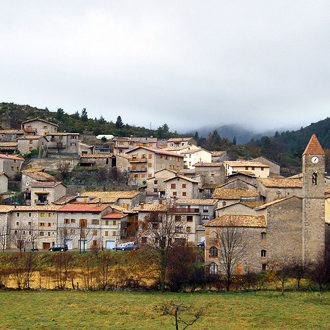
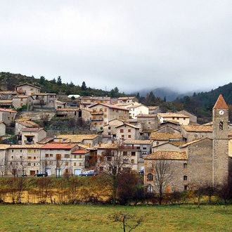

Gósol

L'Entrada al Pedraforca
Aquest petit poblet de muntanya, dins la vall del Pedraforca, ens permet realitzar tot d’activitat al voltant del Pedraforca.
 Gósol - Camí al Pedreforca
Gósol - Camí al Pedreforca

Aquest petit poblet de muntanya, dins la vall del Pedraforca, ens permet realitzar tot d’activitat al voltant del Pedraforca.